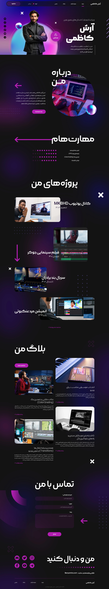

طراحی سایت پرسونال برند آرش کاظمی
مشتری: آرش کاظمی
در این پروژه، هدف طراحی یک وبسایت پرسونال برندینگ برای آرش کاظمی، ادیتور ویدیو و تولیدکننده محتوای حرفهای بود. سایت با تمرکز بر نمایش مهارتها، نمونهکارها، بلاگ و راههای ارتباطی طراحی شد تا هویت حرفهای و خلاقانه مشتری را به بهترین شکل ممکن به مخاطبان منتقل کند.
نمایش سایت
نمای کلی صفحه اصلی سایت

(برای اسکرول تصویر، دستگیره کنار را بکشید)
جزئیات فنی و امکانات پیادهسازی شده
صفحه اصلی با تم تاریک و رنگبندی مدرن (بنفش و مشکی)، فضایی حرفهای و جذاب ایجاد میکند. المانهای گرافیکی پویا و تایپوگرافی خاص، حس دیجیتال و تکنولوژیک را به کاربر القا میکند. ساختار سایت به صورت اسکرول تکصفحهای و با بخشبندی واضح طراحی شده است:
بخشهای اصلی سایت:
- درباره من: معرفی کوتاه و حرفهای
- مهارتها: نمایش مهارتهای کلیدی
- نمونهکارها: معرفی پروژههای شاخص
- بلاگ: نمایش آخرین مقالات
- تماس با من: فرم تماس کاربردی
- شبکههای اجتماعی
امکانات و ویژگیهای برجسته:
- طراحی اختصاصی رابط کاربری (UI) با الهام از ترندهای روز
- استفاده از رنگهای تیره، افکتهای نئونی و المانهای گرافیکی مدرن
- واکنشگرا (Responsive) برای تمامی دستگاهها
- کدنویسی تمیز و بهینه (HTML5, CSS3, JavaScript)
- اسکرول تکصفحهای با ترنزیشنهای جذاب
- رعایت اصول UX/UI برای تجربه کاربری لذتبخش
- بهینهسازی برای موتورهای جستجو (SEO)
چالشها و راهکارها
انتقال هویت بصری شخصی: با توجه به اهمیت برندینگ شخصی آرش کاظمی، طراحی سایت به گونهای انجام شد که هویت بصری و حرفهای او به صورت شفاف و متمایز نمایش داده شود.
ترکیب جذابیت بصری و کارایی: استفاده از افکتهای گرافیکی بدون افت سرعت سایت یا کاهش دسترسیپذیری، با بهینهسازی حجم تصاویر و کدنویسی اصولی.
نمایش حرفهای نمونهکارها: ایجاد گالری پروژهها با تصاویر باکیفیت و توضیحات مختصر، به نحوی که کاربر در نگاه اول با توانمندیهای مشتری آشنا شود.
نتیجه نهایی
خروجی این پروژه، یک سایت پرسونال برندینگ کاملاً مدرن و حرفهای است که به آرش کاظمی کمک میکند مهارتها و نمونهکارهای خود را به صورت متمایز و تاثیرگذار به مخاطبان معرفی کند. طراحی اختصاصی، واکنشگرایی کامل و رعایت اصول سئو و UX، این سایت را به یک نمونه موفق در حوزه سایتهای شخصی و پورتفولیو تبدیل کرده است.


آیا این پروژه برای شما الهامبخش بود؟
اگر این نمونه کار مورد توجه شما قرار گرفته و یا ایدهای مشابه یا متفاوت در ذهن دارید، باعث افتخار من است که در مورد آن با شما گفتگو کنم و به تحقق رویای دیجیتالی شما کمک کنم.
بیایید پروژه بعدی شما را با هم بسازیم!